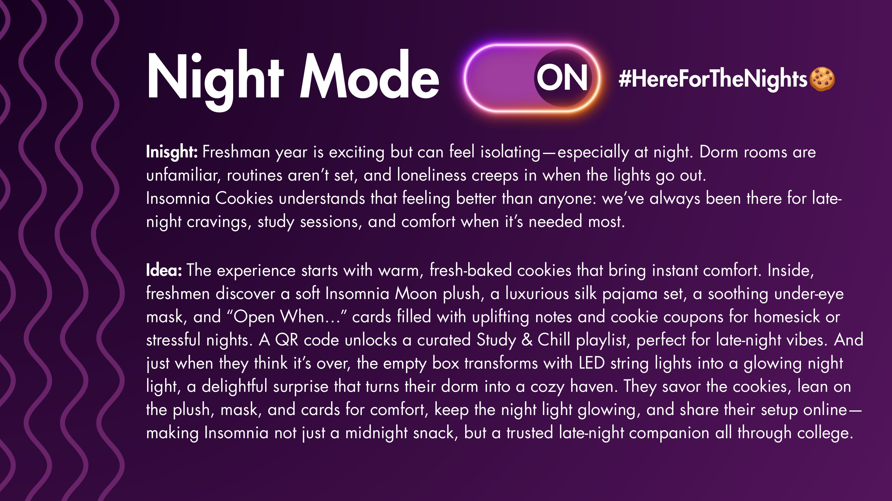
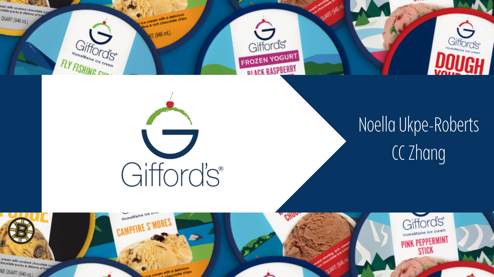
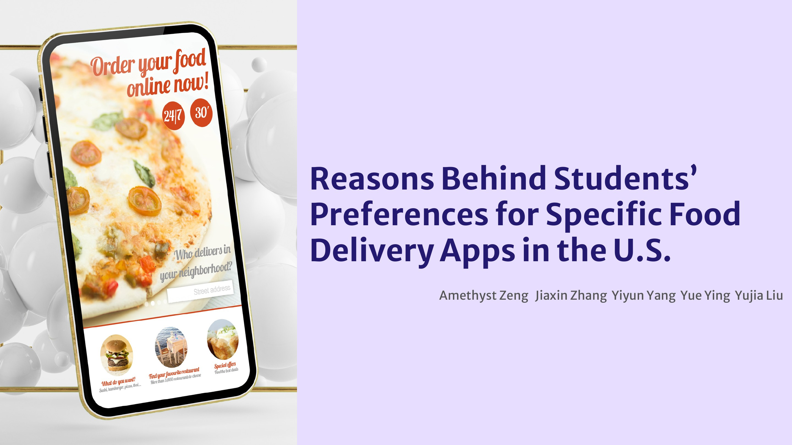

Campaign index / 14 projects
Every idea
leaves a trace.
A living archive of campaigns, scripts, research, strategy and visual systems—each rebuilt from its original project presentation into a complete story.

LEGO × National Parks
Integrated Campaign2025↗
Reco
Strategy & Copywriting2025↗
Want Want
Brand Reactivation2025↗
Spirit Airlines
Brand Film & CopywritingSelected work↗
Liquid Death
Product & Experiential ConceptSelected work↗
Insomnia Cookies — BYOM
Brand ExperienceSelected work↗
Insomnia Cookies — Night Mode
Brand ExperienceSelected work↗
Starface
Activation ConceptsSelected work↗
McDonald’s
Technology Strategy2025↗
Gifford’s Famous Ice Cream
Film & CopywritingSelected work↗
Food Delivery App Study
Consumer ResearchSelected work↗
The Seattle Times
Brand Research & Strategy2024↗